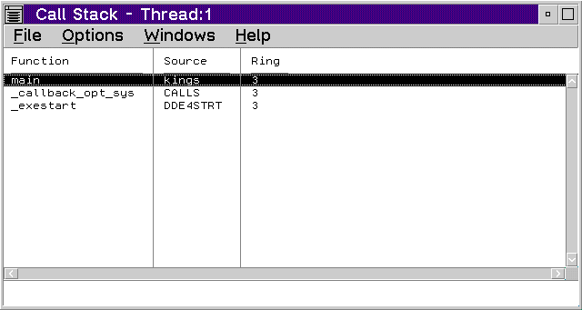

The Call Stack window lists all of the active functions for a particular thread including system calls.
Each Call Stack window displays call stack information for one thread only. When the state of the program changes, such as when you execute the program or you update displayed data, the Call Stack window changes to reflect the current state. You can double-click on any call stack entry to display the source code for that entry. The line that calls the next stack entry is highlighted. The remaining stack size shows the bytes left in the stack for the thread.
Note: The stack may not display correctly if the code does not follow standard calling conventions or if you step into optimized code.
To display the Call Stack window, select Call Stack from the Monitors menu or select the Call Stack button from the tool bar.